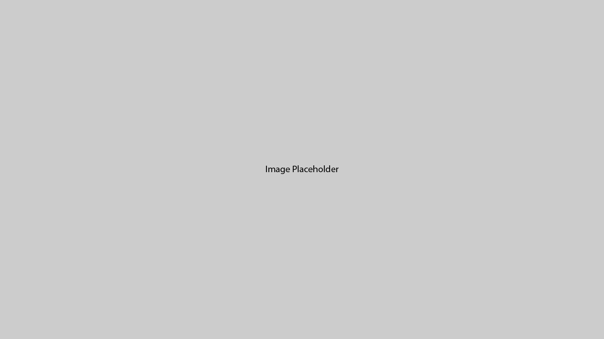

TF
Foster Design System
Typography
Colours
Images
Spacing
Navigation
Forms
Lists
Accordions
Cards
Carousels
Modals
Modals
JavaScript for modal examples:
// Get the buttons that open the modals let btns = document.getElementsByClassName("modal-button"); // Get the <span> elements that close the modals let spans = document.getElementsByClassName("modal-close"); // When the user clicks on the button, open the corresponding modal for (let i = 0; i < btns.length; i++) { btns[i].onclick = function () { this.nextElementSibling.style.display = "block"; } } // When the user clicks on <span> (x), close the corresponding modal for (let i = 0; i < spans.length; i++) { spans[i].onclick = function () { this.parentElement.parentElement.style.display = "none"; } } // When the user clicks anywhere outside of the modal, close it window.onclick = function (event) { if (event.target.classList.contains("modal")) { event.target.style.display = "none"; } }
Open Modal
×
Some text in the Modal..

×
Modal text content